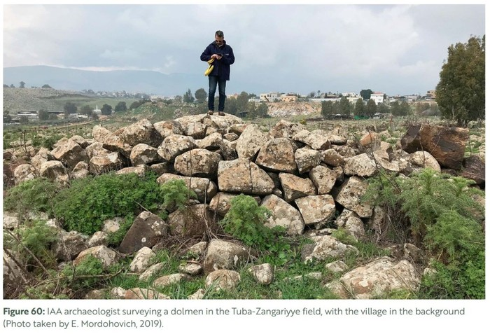

Values 5–6 reformatted from previous session notation style to current InSites notation key.
Stepansky links the dolmen builders to semi-nomadic pastoralists of the IB–MBIIA period, based on Horbat Berekh's material culture. [C:pp.46–48] The Korazim Plateau has sustained pastoral communities through historical periods, and the Zangariyye and El-Heib Bedouin tribes have inhabited it since at least the 18th century. [C:p.50 note 4; B] The dolmen field sits immediately adjacent to the present village.
This long arc of pastoral presence — ancient builders, Ottoman-era cultivators, modern Bedouin — suggests a social value rooted in continuity of landscape use, though the connection between the Bronze Age population and later inhabitants is cultural-geographic rather than demonstrated lineage.〰️ The critical gap noted in Stage 1 applies here: no community voice has been recorded, and the social value therefore rests on archaeological inference rather than living testimony.
Biblical references to Rephaim giants in Transjordan, the New Testament "tombs" near Korazim, Talmudic references to dolmens as "Merkolis" (pagan entities), and the Bedouin term "Dan" (shelter) for dolmens collectively suggest that these structures have generated cultural meaning across at least four distinct traditions. [C:p.50 note 2; B]
The intangible context (Stage 1) frames the dolmens as persistent stimuli for narrative production. However, the evidence linking these specific textual traditions to the Tuba-Zangariyye field (rather than to Korazim Plateau dolmens generally) is indirect💭 — the association is plausible given proximity but not site-specific.
| Notation | Meaning |
|---|---|
| (none) | Explicit in source |
| 〰️ | Inferred from 2+ pieces of evidence (cite the evidence) |
| 💭 | Uncertainty / interpretation — a claim that is neither explicit nor confidently inferred |
| [file:page] | Source |